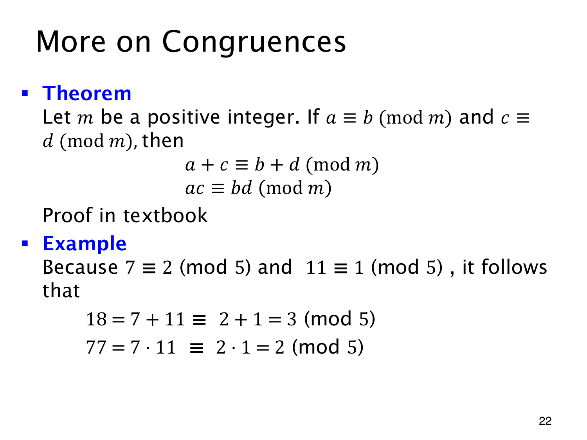

L1.12 · 第 22 页讲解原文
查看这一页课件

用同余的数替换操作数
7≡2(mod5)、11≡1(mod5)，所以计算和与积时，可以分别换成 2 和 1：
18=7+11≡2+1=3(mod5),
77=7⋅11≡2⋅1=2(mod5).
链中的等号仍表示整数相等，同余号则只比较模 5 的余数。
一般地，若 a≡b(modm) 且 c≡d(modm)，有
a+c≡b+d(modm),ac≡bd(modm).
两个前提要用同一个正模数 m。由定义写 a=b+ms、c=d+mt，其中 s,t∈Z，便有
(a+c)−(b+d)=m(s+t),
ac−bd=m(bt+ds+mst).
两个差都被 m 整除，因而和与积的同余成立。反复相乘还能将同余底数同时提升到同一个非负整数次幂；这没有授权任意改变指数的模数，也不能据此任意相除。